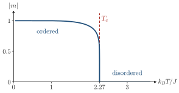
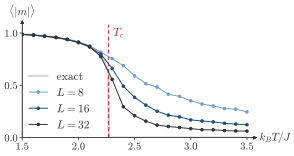

Page 6 of 9 of this session
10.6a Phase classification with local order parameters and topological order
Can a network that is trained on snapshots of spins find a phase transition, and what does it learn? We will now see that for the Ising model it finds again the logic of the magnetization (10.9), which is a local order parameter. The drop of \(|m|\) at \(T_c=2J/\ln(1+\sqrt2)\approx2.27J\) becomes sharper as the lattice grows, and the trained classifier shows this too.
\[\mathcal{L}(\theta) = \sum_n \left\| f_\theta(x_n) - y_n \right\|^2, \qquad \theta \;\longrightarrow\; \theta - \eta\, \nabla_\theta \mathcal{L}(\theta), \tag{10.1}\]
This is the loss and the update of a network in Section 10.2. On this page the input \(x_n\) is a snapshot of the spins, and the label \(y_n\) is a one-hot vector for ordered or disordered. As before, \(\theta\) holds the weights and the biases, and \(\eta\) is the learning rate.
This section is, in a real sense, a review of the classification scheme of the whole course, seen from the point of view of machine learning. In this course we have used two quite different tools to distinguish phases. Session 1, Session 5 and Session 6 used a local order parameter, which is a quantity built from a simple local expectation value that is zero in one phase and nonzero in the other. It comes with the spontaneous symmetry breaking of Section 1.11. Examples are the charge imbalance for the charge density wave of Section 1.13, the magnetization for the magnet and the pairing amplitude for the superconductor.
Session 3 and Session 4 instead used a topological invariant, such as the Chern number of Section 3.5 or the Zak phase of Section 3.9c. The reason is that the phases there are not distinguished by any local quantity at all, and the difference can only be seen in a non-local way. In this session the same contrast gives an easy and a hard worked example of machine learning.
The easy case, the Ising model. Let us take classical Ising spins \(\sigma_i = \pm 1\) on a square lattice, with the standard nearest-neighbor Hamiltonian and a local order parameter.
The Ising model on the square lattice and its magnetization are
\[H_{\rm Ising} = -J\sum_{\langle i,j\rangle} \sigma_i \sigma_j, \qquad m = \frac{1}{N}\sum_i \sigma_i, \tag{10.9}\]
with \(N\) spins and the sum over the pairs \(\langle i,j\rangle\) of first neighbors. Here \(m\) is a local order parameter. Well below \(T_c=2J/\ln(1+\sqrt2)\approx2.27J\) a snapshot has \(|m|\) close to one, and far above it \(|m|\) is of order \(1/\sqrt N\), so one number per snapshot tells the phase.
This model has ferromagnetic order (\(|m|>0\)) below a critical temperature \(T_c\) and is disordered (\(m\to 0\)) above it. Note the sign, since here \(J>0\) favors parallel spins, while in the Heisenberg model (6.5) of Session 6 a positive \(J\) is antiferromagnetic. If we only have a single snapshot of the spin configuration, at some unknown temperature, we can see the phase even by eye. We sum the spins and check whether the result is close to \(\pm N\) or close to \(0\). Even so, it is a clean and controlled test case for machine learning.
We train the same cat-versus-dog architecture of Section 10.2 on labeled snapshots below and above \(T_c\), where the input is the \(L\times L\) spin snapshot and the output is a one-hot label for ordered or disordered. The classifier then gives a transition that becomes sharper as the system size grows, for sizes from \(L = 10\) up to \(L = 60\), and this reproduces what we already know analytically.


Next we will see a model where this simple test fails.
A snapshot of the two-dimensional Ising model has \(|m|=0.93\). On which side of \(T_c\) was it taken?
Show the answers
- A. ✗ False
This is false. Random-looking spins give \(m\approx0\). For \(N=64^2=4096\) spins far above \(T_c\) the typical value is \(1/\sqrt N\approx0.016\), so \(0.93\) is not random-looking.
- B. ✓ True
This is true. For \(N=4096\) the fluctuation of \(m\) far above \(T_c\) is about \(0.016\), so \(|m|=0.93\) is more than \(50\) standard deviations. The snapshot comes from the ordered phase.
- C. ✗ False
This is false. The fluctuations of \(m\) are small for a large system, about \(0.016\) for \(N=4096\) far above \(T_c\). A single snapshot with \(0.93\) is therefore enough to decide.
The classifier of cats and dogs takes an image and gives a one-hot label. We train it on snapshots of the Ising model on \(L\times L\) sites. What are the input and the output?
Show the answers
- A. ✓ True
This is true. The network sees the spin array, and the label is the phase at which it was sampled. With this the network can find the transition without being told the local order parameter.
- B. ✗ False
This is false. If the temperature is the input, the answer is a comparison with \(T_c\), which we must already know. The network would learn nothing about the snapshot.
- C. ✗ False
This is false. The critical temperature \(T_c=2.27J\) is a property of the model and not of a snapshot. An output that is the same constant for every input is not a classifier.
The magnetization of a snapshot of \(N\) spins \(\sigma_i=\pm1\) is
\[m=\frac{1}{N}\sum_i\sigma_i.\]
Each histogram shows \(|m|\) of single snapshots of a \(16\times16\) Ising lattice. Here \(p(|m|)\) is the probability density, and \(T_c=2.27J\). Which histogram was taken at \(k_BT=1.5J\)?
Show the answers
- A. ✗ False
This is false. These snapshots are at \(k_BT=3.5J\), above \(T_c\), where the spins are disordered. The mean of \(|m|\) is about \(0.12\), from \(0.11\) to \(0.13\) over \(20\) runs, and it is not zero only because the lattice is finite.
- B. ✓ True
This is true. Below \(T_c\) the spins are ordered, and every snapshot has \(|m|\) close to one. The mean is \(0.99\), as the exact \(|m|=0.9865\) of the infinite lattice at this temperature.
- C. ✗ False
This is false. These snapshots are at \(k_BT=2.27J\), at \(T_c\). The histogram is wide, with snapshots from below \(0.5\) to above \(0.9\), since at the transition \(m\) fluctuates strongly.
Take \(N\) independent spins \(\sigma_i=\pm1\), each up or down with probability \(1/2\), which is the Ising model at infinite temperature. Show that the magnetization \(m=\frac1N\sum_i\sigma_i\) has \(\langle m\rangle=0\) and \(\langle m^2\rangle=1/N\). What is the typical \(|m|\) of one snapshot for \(N=64^2=4096\), and how does it compare with \(|m|\) at \(k_BT=1.5J\)?
Solution
Each spin has \(\langle\sigma_i\rangle=\tfrac12(+1)+\tfrac12(-1)=0\), so \(\langle m\rangle=\frac1N\sum_i\langle\sigma_i\rangle=0\). For the square we write
\[\langle m^2\rangle=\frac{1}{N^2}\sum_{i,j}\langle\sigma_i\sigma_j\rangle.\]
For \(i\neq j\) the two spins are independent, so \(\langle\sigma_i\sigma_j\rangle=\langle\sigma_i\rangle\langle\sigma_j\rangle=0\). For \(i=j\) we have \(\sigma_i^2=1\). Only the \(N\) terms with \(i=j\) are left, and \(\langle m^2\rangle=N/N^2=1/N\).
The typical size of \(m\) is then \(\sqrt{\langle m^2\rangle}=1/\sqrt N\), which is \(1/64\approx0.016\) for \(N=4096\). A sample of \(20000\) snapshots of \(4096\) random spins gives a spread of \(m\) of \(0.016\) too. At \(k_BT=1.5J\) the exact result gives \(|m|=0.99\), which is more than \(60\) times larger.
This is why one snapshot is enough to tell the phase of a large lattice. The fluctuations of \(m\) go down as \(1/\sqrt N\), while the ordered value stays close to one, so the two regimes separate more and more as the lattice grows.